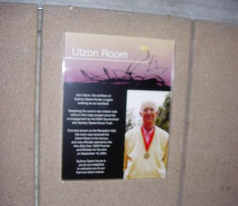
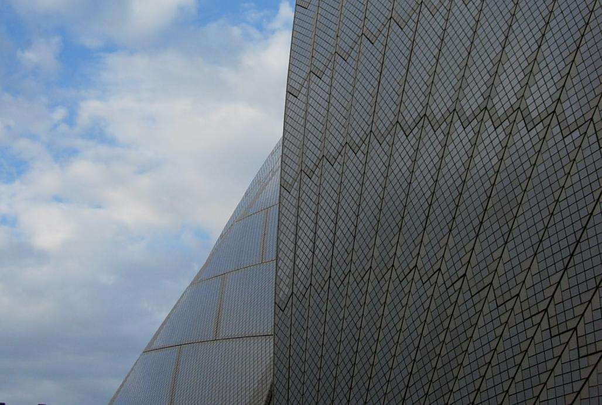
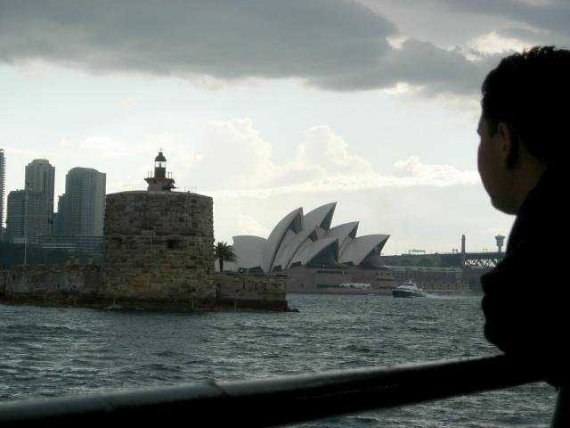
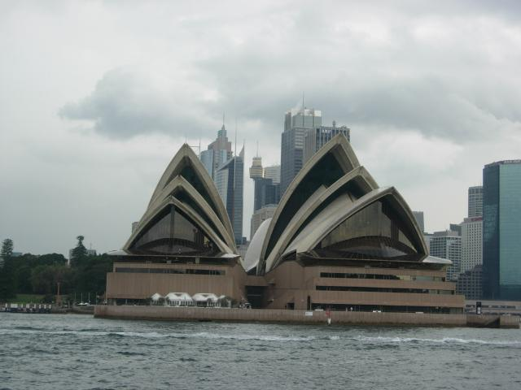
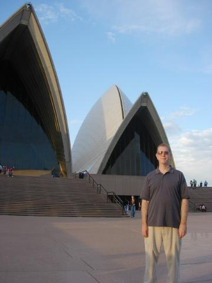
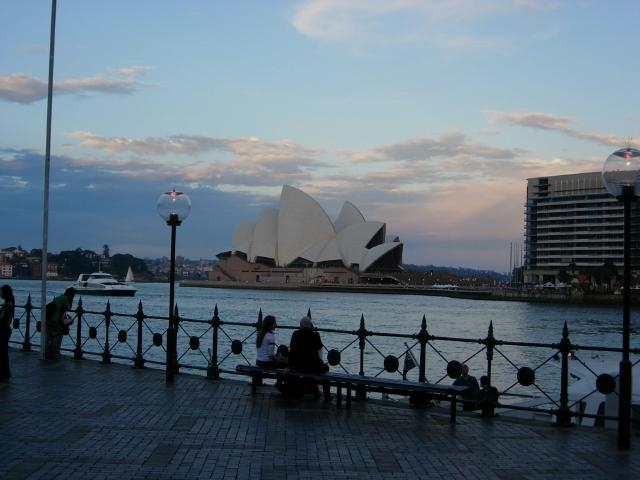
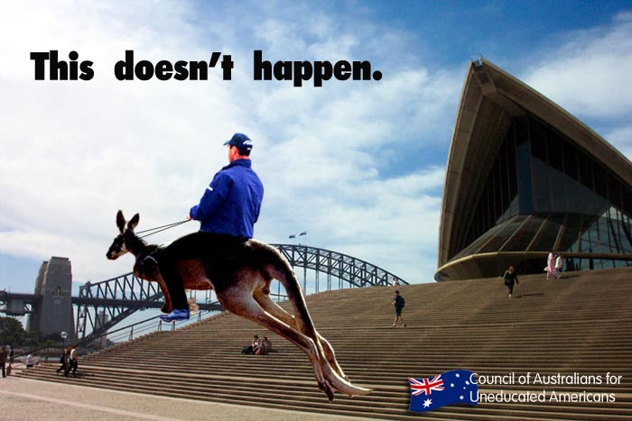

-=Sydney Opera House=-

An international competition was held for the opera house design. Someone from the UK came in third; someone from the US got second, and Jorn Utzon from Denmark won to his utter surprise; he'd sent in nothing more than the sketch shown above. Utzon was a perfectionist; the project ran a decade and nearly $100M over budget. He and the Government eventually parted ways, and he never returned to Australia. Local architects completed the interior design. Recently, at age 88, he has agreed to serve as architect once more, and portions of the interior are being redone according to his original concept.

Close view of a dome

From the Manley Beach Ferry. The acoustics were amazing. The concert hall holds 6,000 people, but there's not a bad spot in the house, and no amplification is required. The opera house is a lot smaller, I think around 2,000. The although there is a fly area, most of the scenery is raised from a two story basement below the stage.
The tour guide informed us that no one is seated after the performance starts. "We've locked out two ex-Prime Ministers; you won't get in."
The concert hall has the world's largest organ--10,200 pipes. Took two years to tune initially; now takes three weeks to touch up. The organ has the reputation for being hard to play.

A storm moved through while we were on the ferry back to downtown Sydney. Couldn't get a good interior shot of this, but the opera house and concert hall are wooden buildings housed within, but detached from, the concrete shells.

Here I am photoshopped in front of the dome. I hope you realize none of these trips are real; I just assemble pics from the web while hiding out in a motel in Manassas. This is my "Can we go eat now?" smile.

View from The Rocks, the place where the original convicts landed. It's now a restaraunt row. The water is Circular Quay; downtown Syndey is off frame to the left.
